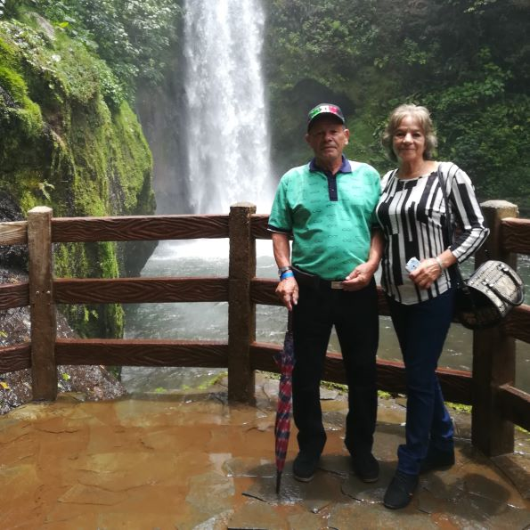

Coffee History
-

1900-1930
The start in coffee
In the decade between 1900 and 1910 Vicente Monge Retana and his wife Amalia Fallas Barboza started growing coffee in Bustamante, Frailes of Desamparados. Being pioneers of the family in the coffee growing.
-

1930-1970
Second Generation
The farm is inherited by his two sons, one of whom, Benigno Monge Fallas, continues to grow coffee and acquires more plantations in the area.
-

1970-1993
Third Generation
Benigno Monge Fallas inherited his farms to his 7 children, one of whom is Rosa Monge Piedra, who, together with her husband Alfredo Piedra Arias, is working full time in coffee cultivation as a primary source of income for her family's sustenance. -

1993 - Actuality
Fourth Generation
When their children got married, Alfredo Piedra Arias and Rosa Monge Piedra gave them a piece of land to support their family. One of their sons is Rodrigo Piedra Monge who is the producer of the coffee you are enjoying today. Since then, Rodrigo Piedra Monge and his wife, Guisselle Solís Garro, have dedicated themselves to coffee production
-

2021- Actuality
Specialty coffee journey begins
In January 2021 Ricardo Piedra Solís, Rodrigo and Guisselle's son, asks them to separate some coffee for processing. When they did this, the family was surprised by its taste, as they had never tasted it before since all the coffee had always been delivered to the mill.
What started out of curiosity became a small family project involving the 4th and 5th generations of coffee growers. Kevin and Ricardo, the sons, became more involved in coffee. Over time, the four of them started processing more coffee each year with the goal of one day processing all their harvested coffee—not only in the traditional way but also as specialty coffee.
-
¡Be part
of our
History!